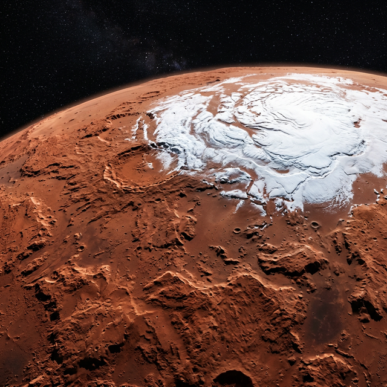

Mars
The Red Planet – Land of Volcanoes and Canyons
Mars is the fourth planet from the Sun and the second smallest in the Solar System. Its reddish colour comes from iron oxide (rust) on its surface. Mars has the largest volcano in the Solar System — Olympus Mons, which stands 22 km high — and Valles Marineris, a canyon system stretching over 4,000 km. Mars has a thin atmosphere and evidence suggests liquid water once flowed on its surface. NASA's rovers, including Curiosity and Perseverance, are currently exploring its surface.
| Property | Value |
|---|---|
| Diameter | 6,779 km |
| Distance from Sun | 227.9 million km |
| Orbital Period | 687 Earth days |
| Day Length | 24 hours 37 min |
| Surface Temp. | -125°C to 20°C |
| Moons | 2 (Phobos, Deimos) |
| Type | Terrestrial (Rocky) |
Fascinating Facts
- 🌋 Olympus Mons on Mars is the Solar System's tallest volcano — nearly 3 times the height of Everest.
- 🏜️ Valles Marineris is a canyon so vast it would stretch from New York to Los Angeles.
- 🤖 Mars has been explored by more robots than any other planet, including Curiosity and Perseverance.
- ❄️ Mars has polar ice caps made of water ice and carbon dioxide ice.
- 🚀 Mars is the most likely candidate for future human colonisation.